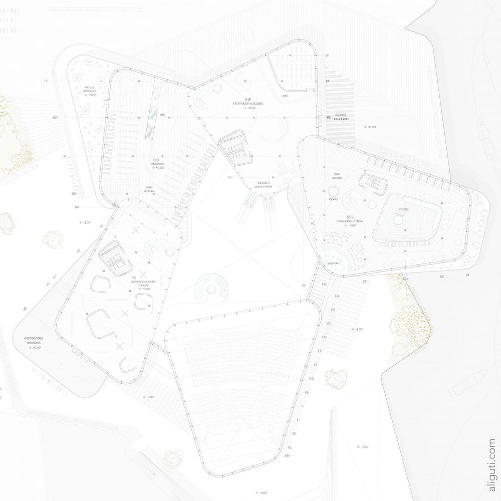

NOBEL CENTER - ARCHITECTURE MASTER PROJECT
The Nobel Center was my Master Project. It was developed simultaneously with the real Nobel Center competition that was looking to find a new home for the Nobel Prize in Stockholm (Sweden).

The project started with the study of the façades of Stockholm and their chromaticism. Despite the variety of façades, the roofs act as a unifying element in the array. This is how the main idea for the project arises, to generate a large deck that collects under it the entire program. At this point, the project evolves. The program takes the edges, setting the center free, and creating a large interior space that works as an extension of the urban space.

You can view more 3D images and renders of the project HERE
In early versions of the project, color was not only present as project generator but also as color itself. Nobel Prize colors (gold and deep blue) were used in the façade. However this idea was later discarded.
A small handmade booklet was also made to compilate the whole project. You can partially see the booklet in the video below.